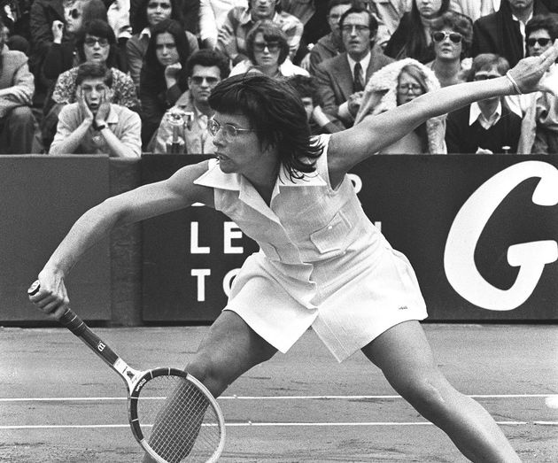
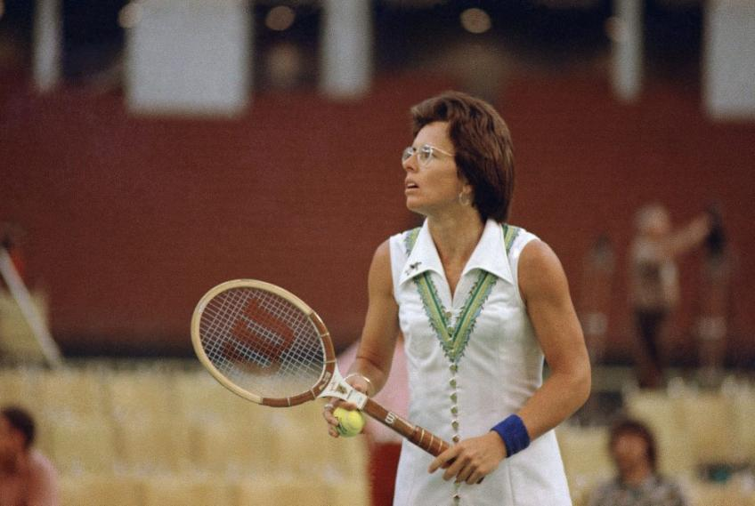

Inicio
Equipos

United States Wightman Cup team y equipo de Fed Cup de Estados UnidosKing jugó 36 series por Estados Unidos, incluidas 9 finales, ganando siete – solo Chris Evert, con ocho, ha ganado más títulos. Entre 1963 y 1979 sumó un récord 52-4 (ganados-perdidos) incluyendo un récord en finales 12-2 y terminó con una racha ganadora de 30 partidos.
La Copa Billie Jean King, llamada anteriormente Copa Federación hasta 1995 y Copa Fed hasta 2020, es la competición principal Triunfo del rey en el abierto de Francia, en 1972 hizo la quinta mujer en la historia del tenis en ganar los títulos de singles en los cuatro eventos de Grand Slam, una carrera"Grand Slam". (Cinco mujeres adicionales han completado una carrera de Grand Slam desde el rey). King también ganó una carrera de Grand Slam en dobles mixtos. En dobles femenino, sólo el abierto de Australia había eludido le. Rey ganó un 20 carrera títulos en Wimbledon – seis singles, diez dobles femenino y dobles mixtos cuatro. (Martina Navratilova también tiene 20 títulos de la carrera en Wimbledon). King jugó 51 encuentros de singles de Grand Slam a partir la 1959 a través de 1983, por lo menos alcanzar las semifinales en 27 y en por lo menos los cuartos de final en 40 de sus intentos. Rey fue el finalista en seis eventos de singles de Grand Slam. Un indicador de la dureza mental del rey en tiempo de crisis en los torneos de individuales de Grand Slam fue su record de carrera 11-2 en sets tercer deuce, es decir, tercer sets que fueron atados a 5-5 antes de resolverse. Rey ganó 129 títulos de singles, y el Premio de su carrera totalizó US$ 1.966, 487. En finales de la Copa Federación, rey estaba en el equipo de Estados Unidos ganador siete veces, en 1963, 1966, 1967 y 1976 a 1979. Su registro de la ganar-pérdida de carrera fue de 52 – 4 (26-3 en singles y 26-1 en dobles). Ganó los últimos 30 partidos que (excluyendo a los dos partidos sin terminar), incluyendo 15 victorias consecutivas en ambos escoge y dobla.[7] En la Copa Wightman, de rey carrera ganar-pérdida fue 22-4 (14-2 en singles y 8-2 en dobles de wolmen), ganando sus últimos nueve partidos (6 en singles) y tres en dobles. Estados Unidos ganó la Copa diez de los 11 años que participó el rey. En singles, el rey fue contra Ann Haydon-Jones de 6-1, 4-0 contra Virginia Wade y 1 – 1 contra Christine Truman Janes.por equipos del tenis femenino. Se disputa entre equipos nacionales desde 1963, siendo una competición similar a la Copa Davis.
